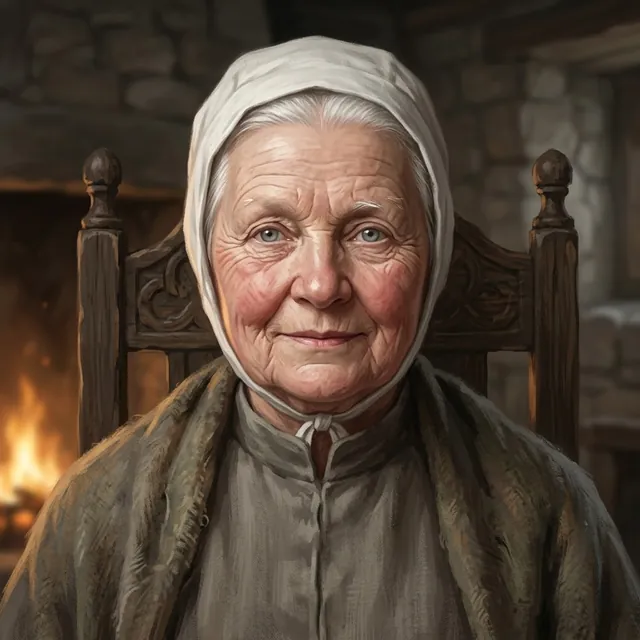

Mother Ione
Prior of Saint Ysolde's
Only what the story has shown so far.
Appearance
The Prior of Saint Ysolde's, in her seventies: small and very upright, white hair cropped close under a plain linen coif, a soft round face creased like a winter apple, and pale eyes that count everyone in a room in turn. The creases run all over it: rosy cheeks, sparse white brows, very pale grey-blue eyes, and a small firm mouth that keeps a faint, patient smile. The coif is tied under her chin, and she wears a high-collared gown of plain grey-brown wool under a worn grey-green wool shawl. Gentle in face and manner, with iron under it. In the warming room she has the one good chair by the fire and offers it to nobody.
Now
Last seen Chapter 2 · Between — The Kept · Saint Ysolde's
Prior of Saint Ysolde's, with Confessor Ivo Marrant camped on the lower terrace below her gate. She let him read his list at the bars, and when he held his paper out under the law of guests she kept him waiting for the bell as long as she could, then had the wicket opened; two grey cloaks came through it before Old Mercy rang, late, and she spoke the law of names. When Darrow gave his name at the bars and the House's story died at her gate, the Confessor thanked her for her candour. She did not reproach Darrow; she asked whether his shoulder was hurt. That night in the chapel she told him a lie told for a man is his to bury, that she says the names of everyone under her roof every night, and that she has never once given a name to a writ; he is in her count.
Story so far
When the grey cloaks were sighted on the Holloway, the news went first to Mother Ione. She called a council in the warming room off the cloister: Maelis, Sister Pell, Rae Thorne who had heard the list read, and Darrow, whose name is first on it. She asked how it was read, had the law of Old Mercy said aloud for the Captain, and asked Sister Pell whether she would ring it dawn and dusk for as long as the grey cloaks wait. The council broke with nothing decided aloud, and she called Darrow back to ask what she ought to know before she decides. At the next dawn bell she came to the foot of Darrow's cot: the winch-brothers had taken his far side of the mountain down to the valley, Old Mercy had not rung at dusk, so the valley heard what it always hears from the House, and when the grey cloaks are at the bars he is to tell Wren when. In the hour before dusk she stood before the gate and let the Confessor read; she kept him waiting at the wicket for the bell as long as the law of guests allowed, and when his men came through and the bell rang late, she gave him the law's other half, that no name under it is taken down against its will. When Darrow gave his name at the bars, the Confessor thanked her for her candour, and she asked Darrow only whether the shoulder was hurt.
Quote
I have never once given a name to a writ. Did you think I would start with yours?
Relationships
- Confessor Ivo Marrantthe Confessor who read his list at her gate
She let him read, made him wait at the wicket for the bell, and answered his men with the bell and the law of names; when the Captain gave his name, Marrant thanked her for her candour.
The Reckoning
Level 9 · Kindled
Ember steady and old
Arts none
Deeper ⟦ unread ⟧
Read with Warden's Eye III. Stronger sight reads deeper. The ranks of the Ember run Bound · Kindled · Tempered and up; Oathsworn is borrowed strength.
Known facts
What the page has shown (21)
- By the time Wren Ashdown reached the infirmary hall with word of the grey cloaks on the Holloway, Mother Ione had been told.Chapter 1 · Scene 1 — The Reading of the Knots
- She holds her council in the warming room off the cloister, has the one good chair by the fire, and offers it to nobody.Chapter 1 · Scene 3 — The Law of Bells
- She asked Rae Thorne how the list was read, had Maelis give Darrow the law of Old Mercy, and asked Sister Pell whether she would ring it dawn and dusk for as long as the grey cloaks care to sit at the bottom.Chapter 1 · Scene 3 — The Law of Bells
- She has not yet decided whether Old Mercy rings. She called Darrow back from the stair to ask what he would have her know first, and what the lay brothers should tell the valley when it asks who sleeps up here.Chapter 1 · Scene 3 — The Law of Bells
- She let the Captain ask to be sent down and the Mender answer him, then closed the council having heard them all: Sister Pell would hear from her before dusk, and the lay brothers would want to know what to say to the valley.Chapter 1 · Scene 3 — The Law of Bells
- At her council she put it to Darrow as a question: if the lay brothers tell the valley there's nobody up here, what does a sanctuary bell tell it at dusk? After his answer, Old Mercy did not ring at dusk, nor at the next dawn.Chapter 1 · Scene 3 — The Law of Bells
- When Darrow offered to go down on the cage so the list would have nothing to climb for, she asked him how many names the next writ would carry once the House had given them one, and did not wait for him to count.Chapter 1 · Scene 3 — The Law of Bells
- She came up the hall on the last stroke of the dawn bell and waited at the foot of Darrow's cot until Benedek's lips stopped moving before she spoke.Chapter 1 · Scene 4 — Boots on the Board
- At first light the winch-brothers went down with Darrow's story of the far side of the mountain, to tell it at the winch-house fire, so that the valley would have it by noon.Chapter 1 · Scene 4 — Boots on the Board
- She asked Darrow whether he told it for the House or for the river; he said the river had had enough of them.Chapter 1 · Scene 4 — Boots on the Board
- At the next dawn she told Darrow Old Mercy had not rung at dusk, so the valley heard what it always hears from the House; when he said there was no law on the gate, she said not till she rings, and asked whether he had slept any worse for it.Chapter 1 · Scene 4 — Boots on the Board
- She asked Darrow, who reads a line before it moves, to tell Wren when, once the grey cloaks are at the bars; it was not a question, and he said he would.Chapter 1 · Scene 4 — Boots on the Board
- She ordered nobody into the court; at the hour bell she asked whether the House would like to see who had climbed so far to read to it, and the House came.Chapter 1 · Climax — The Law of Names
- She stood before the gate with Maelis a pace behind her shoulder; when the Confessor said she would forgive him if he read anyway, she asked, 'Would I stop you?'Chapter 1 · Climax — The Law of Names
- She let the Confessor hold his paper out through the bars while the bell did not come; when he said he would hate to tell the bell-houses her House broke the law of guests to keep a courier standing in the cold, she asked the gate-ward whether they should take the Confessor's paper.Chapter 1 · Climax — The Law of Names
- When Old Mercy rang she told the Confessor, without moving and lowering her voice so the court leaned to hear, that while it rings no blade climbs the Steps or passes the gate, and the other half, which his order reads at every bell-house twice over: no name under it is taken down against its will.Chapter 1 · Climax — The Law of Names
- When Darrow gave his name at the bars and the Confessor thanked her for her candour, she did not look at the gate; she looked at Darrow and asked him whether the shoulder was hurt.Chapter 1 · The choice — Darrow of Edgemoor
- Every night, alone in the chapel, she says the names of everyone under the House's roof, and notices which ones she has had to stop saying.Chapter 2 · Between — The Kept
- Asked to be angry that Darrow buried the House's story at the gate, she asked whose story it was: he gave it to the lay brothers, she only let them carry it, and a lie told for a man is his to bury.Chapter 2 · Between — The Kept
- She told him the Menders' vow is four words, to mend what climbs, and nobody who wrote it thought to add 'and hand it down to whoever asks'; she has never once given a name to a writ.Chapter 2 · Between — The Kept
- She said she held the bell so that Darrow would have a choice too, and that he is in her count of names, and was before he gave his name to the Confessor.Chapter 2 · Between — The Kept